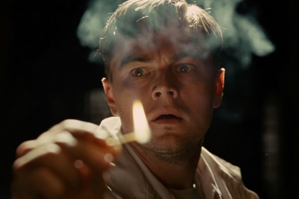

Action
This major genre type includes films that have tremendous impact, continuous high energy, lots of physical stunts and activity, possibly extended chase scenes, races, rescues, battles, martial arts, mountains and mountaineering, destructive disasters (floods, explosions, natural disasters, fires, etc.), fights, escapes, non-stop motion, spectacular rhythm and pacing, and adventurous heroes - all designed for pure audience escapism with the action sequences at the core of the film.
Action films and adventure films have tremendous cross-over potential as film genres, and road films often overlap with action films. Both types of films come in a variety of forms or genre-hybrids: sci-fi or space, thrillers, crime-drama, war, horror, westerns, etc. Oftentimes, action films are great box-office hits, but lack critical appeal because of their two-dimensional heroes or villains.
The main action centers around a male action hero or protagonist - portrayed by these most prominent actors: Bruce Lee, Steven Seagal, Sylvester Stallone, Harrison Ford, Bruce Willis, Chuck Norris, Arnold Schwarzenegger, Douglas Fairbanks Sr., Bruce Lee, Charles Bronson, Steve McQueen, Jean-Paul Belmondo, Chuck Norris, and Jean Claude Van Damme. Women in action-films usually play the roles of accomplices or romantic interests of the hero, although modern action films have featured strong female characters to broaden demographic appeal.
They almost always have a resourceful hero(ine) struggling against incredible odds, life-threatening circumstances, or an evil villain, and/or trapped or chasing each other in various modes of transportation (bus, auto, ship, train, plane, horseback, on foot, etc.), with victory or resolution attained by the end after strenuous physical feats and violence (fist fights, gunplay). Action films have traditionally been aimed at male audiences, ages 13 to the mid-30s in both American and world-wide markets.
Adventure
Adventure Films are exciting stories, with new experiences or exotic locales. Adventure films are very similar to the action film genre, in that they are designed to provide an action-filled, energetic experience for the film viewer. Rather than the predominant emphasis on violence and fighting that is found in action films, however, the viewer of adventure films can live vicariously through the travels, conquests, explorations, creation of empires, struggles and situations that confront the main characters, actual historical figures or protagonists.

Adventure films were intended to appeal mainly to men, creating major male heroic stars through the years. These courageous, patriotic, or altruistic heroes often fought for their beliefs, struggled for freedom, or overcame injustice. Modern adventure films, some of which have been successful blockbusters, have crossed over and added resourceful action heroes (and oftentimes heroines).
Under the category of adventure films, we can include traditional swashbucklers, serialized films, and historical spectacles (similar to the epics film genre), searches or expeditions for lost continents, "jungle" and "desert" epics, treasure hunts and quests, disaster films, and heroic journeys or searches for the unknown. Adventure films are often set in an historical period, and may include adapted stories of historical or literary adventure heroes (Robin Hood, Tarzan, and Zorro for example), kings, battles, rebellion, or piracy.
Adventure films share many elements with other genres - there are numerous examples of sci-fi, fantasy, and war films with characteristics of this genre. Adventure films, in a broader context, could include boxing movies, motor racing films, and films adapted from literary novels (i.e., King Solomon's Mines (1937 and 1950), The Thief of Bagdad (1924 and 1940), The Three Musketeers (1916, 1921, 1933, 1935, 1948, 1973, and 1993), and The Prisoner of Zenda (1937, 1952)).
Thriller
Thriller and Suspense Films: These are types of films known to promote intense excitement, suspense, a high level of anticipation, ultra-heightened expectation, uncertainty, anxiety, and nerve-wracking tension. Thriller and suspense films are virtually synonymous and interchangeable categorizations, with similar characteristics and features.
If the genre is to be defined strictly, a genuine thriller is a film that rentlessly pursues a single-minded goal - to provide thrills and keep the audience cliff-hanging at the 'edge of their seats' as the plot builds towards a climax. The tension usually arises when the main character(s) is placed in a menacing situation or mystery, or an escape or dangerous mission from which escape seems impossible. Life itself is threatened, usually because the principal character is unsuspecting or unknowingly involved in a dangerous or potentially deadly situation. Plots of thrillers involve characters which come into conflict with each other or with outside forces - the menace is sometimes abstract or shadowy.
Thrillers are often hybrids - there are lots of varieties of suspense-thrillers: (action- or adventure- thrillers //sci-fi thrillers (such as Alien (1979)) //crime-caper thrillers (such as The French Connection (1971)) //western-thrillers (such as High Noon (1952)) //film-noir thrillers (such as Double Indemnity (1944)) //even romantic comedy-thrillers (such as Safety Last (1923))